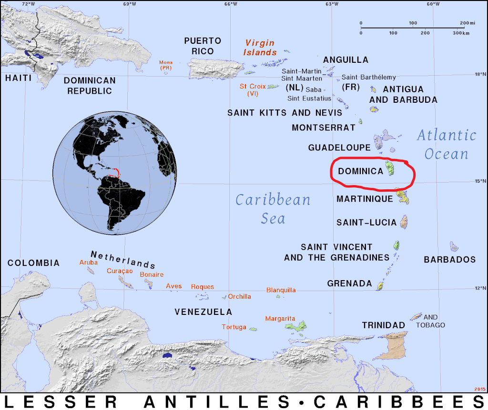
Disaster in Dominica
On September, 18th 2017 Hurricane Maria made landfall on the small caribbean island of Dominica as a Category 5 with 167 mph winds. The storm was rare in the speed at which it went from Category 3 to 5 in less than 24 hours -- giving islands residents around 2 hours of notice. The storm struck at night and by the next morning it had decimated the island's infrastructure, buildings and forests. 100% of island's 73,800 residents were affected. The entire island lost power. 90% of buildings were damaged due to intense rainfall, flooding, and landslides. The lush green forests were mostly damaged, including trees being uprooted, snapped or shredded making its landscapes barely recognizable Dominica Images post hurricane Maria.
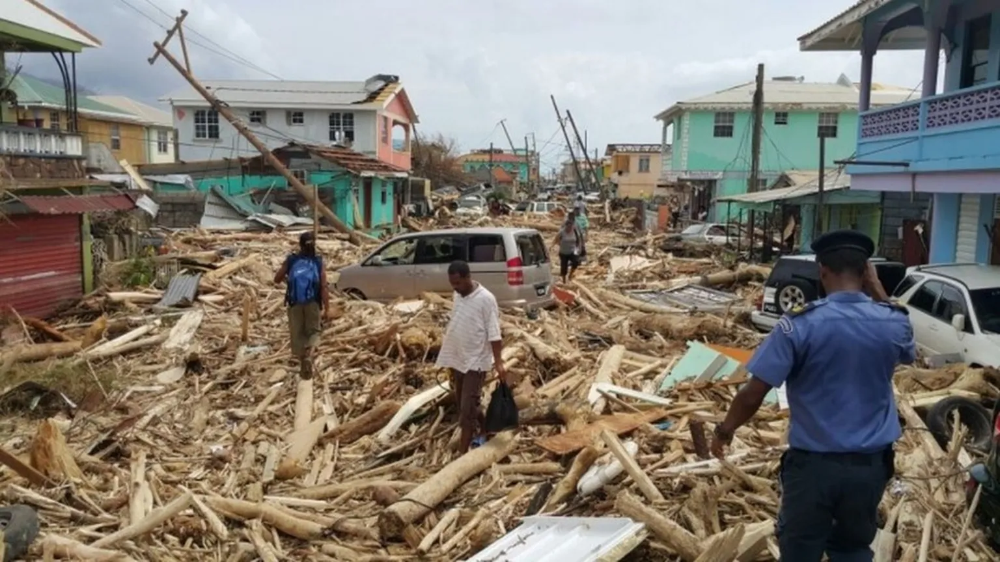
Damage assessment of the ~30,000 buildings on this 750 sq. km island nation took 3 months to complete. 140 public servants and volunteers used tablets and other traditional ground-based structural data collection methods. These assessors categorized and documented the degree of damage by the level of roof damage. They found ~75% of buildings to have 25% or more of the roof damaged, including ~20% that were totally destroyed.
"Every village on Dominica, every street, every cranny, every person was impacted by the hurricane--- Dominican Prime Minister Roosevelt Skerrit. Sep.2017"
The scale and intensity of such a disaster requires a more efficient and safe means of damage assessment. Ultimately, prolonged damaged assessment times delay response times and repairs. The hazards of navigating a damaged landscape and challenging terrain may also lead to inconsistent documentation preventing appropriate resource allocation and planning.
The goal of this blog post is to document and share a high-level tutorial using Esri's deep learning model tools so that you might be able to perform your own building damage assessments in the wake of a disaster. We will start with a UAV image dataset that has been processed into a 2D orthophoto of Loubiere, Dominica post-Maria and load that image into ArcGIS Pro. Loubiere, is a coastal town in the Parish of Saint George in the Southwest of the island. The Pix4D-generated UAV orthophoto of the study area is here Download the image data
User Requirements / (My local system environment)
- ArcGIS Pro (3.3)
- ArcGIS Pro Image Analyst (Yes)
- Deep Learning Libraries Download here (Deep Learning Libraries Installer for ArcGIS Pro 3.3)
- NVIDIA GPU (NVIDIA GEForce RTX 1750 GPU)
- Computer (Dell G5 i7)
What are Deep Learning Models?
Deep Learning is a sub-discipline in the larger field of Artificial Intelligence (AI) that studies various ways to have computers perform tasks requiring human intelligence. It is a type of Machine Learning (ML), where the computer program is trained with examples to learn to identify patterns. In contrast to ML, Deep Learning (DL) has a higher capacity to learn complex patterns. This comes from the way in which DL models use algorithms called neural networks that are structured in a layered interconnected network of nodes. Each node performs calculations on inputs from the prior layer of nodes, and each layer of nodes builds on the learned patterns in the previous layer, allowing the network to learn increasingly more complex patterns. If we think of an image detection DL network trained to recognize cave entrances, a simple arch pattern could be learned in the first layer. As DL model builds on this layer it goes into deeper layers with each resolving more complex patterns. The final layer has learned a 'deep' representation of the data that has all the features needed to detect a cave entrance.
Extract Building footprints in ArcGIS Pro
We start with Esri's pre-trained DL models in ArcGIS Pro to extract building footprints in our disaster site imagery. Pre-trained DL models are ready-to-use DL models built for a specific task, such as land-cover classification or detection objects. By using these pt-DL models we greatly reduce the burden of manually digitizing features and the time it takes to train, and iteratively test it from scratch to achieve high accuracy. This greatly speeds up the workflow and these 'out-of-the-box' pt-DL models may do very well. In our case, the relevant pt-DL model is the Building Footprint Extraction model available on Esri's ArcGIS Living Atlas (Download here). Building footprint extraction will create features that identify the buildings in the study area, which is critical to assess which ones are damaged. Download the model and move it to a folder that will hold all your pt-DL models.
This pt-DL models work well when the your imagery is similar to the those used to train the model. So, it is key to understand what type of image the model is expecting. This enables us to know whether and how to modify our own input imagery --if needed. 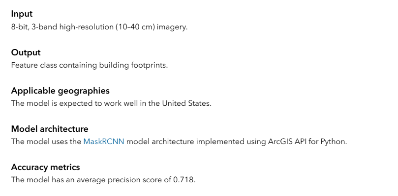
The pt-DL model expects input in the form of 8-bit imagery with 3 bands. Additionally, the input should have a resolution of 10-40 cm, meaning that each pixel in the image represents area of 10-40cm by 10-40cm on the ground. The range rather than single value suggests that the model was trained on imagery of different resolutions (i.e., From 10-40cm). The output will be a newly created feature class with polygons around buildings. Not mentioned here is the expectation that you have nadir or birds-eye-view image. This is in contrast, to angled imagery from street view camera which will not work well. The expected geography is US but it can work well elsewhere. Model Architecture is Mask RCNN. The average precision shown here is ~72% and elsewhere the same is shown as 79%, meaning ~70-80% of the objects the model detects as buildings are in fact buildings and 20-30% are not actually buildings.
The key here is that each DL model has its own metadata or image formatting and labeling requirements. So, we note the model name and use that to select a compatible metadata format later in the tutorial. To have the optimal building detection result, first we need to verify and/or modify our input image such that it aligns with these formatting requirements.
Matching your Image Properties to the Model
Drag and drop the .tif imagery onto the map in ArcGIS Pro. Go to the contents and navigate to the image properties. Note the number bands is 4. For RGB UAV images like the DJI drone used in this case, the 4th band is the alpha channel that represents the transparency level of each pixel. A pixel with an RGBA value of 0 is fully transparent, whereas one with a value of 255 is fully visible. So, if the pixel is a value of 0 it will be invisible and instead reveal the layer beneath it. Try clicking on various places in the image and you will notice that all pixels have a value of 255 for the RGBA band, meaning that all pixels are fully visible. We need to remove this additional band information from the image. 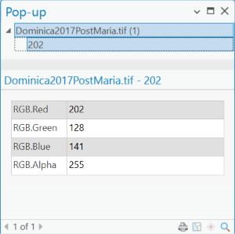
The other difference is the input image cell size of ~4.7 cm which is different than what the model expects. In our case, we will modify the resolution to 10 cm.
The typical way to address the format issues is use ArcGIS Pro's Raster Function Extract Bands on your input TIF image. In the geoprocessing window you would input the values of the bands your in your image and set the Missing Band Action parameter to fail to ensure you correctly extracted 3 bands. After this step, you would then need to save that result because raster function outputs are temporary. To do that you would right-click on the new raster in your contents pane, select Data, and use Export Raster to save it permanently as TIF. However, here I want to advocate for automating this band extraction process and other aspect of the workflow using python scripting and the arcpy library.
Automation in ArcGIS Pro
One powerful aspect of ArcGIS Pro is its automation capabilities using the ModelBuilder tool. ModelBuilder gives you the ability to visually string together geoprocessing tools through a drag-and-drop user interface. It is a good way to standardize and streamline repetitive data processing operations. Then you can share those workflows, for example as a toolbox. ModelBuilder is not the only means to automate geoprocessing. Python scripting is also available for automation and tool creation. In fact, many ArcGIS Pro tools are written in and execute python scripts when you run them. If you did not look for it, you would not appreciate that because they behave and look similar to other geoprocessing tools. The point here is that you can write python to create tools that function in your toolbox and automate your workflow further than possible with ModelBuilder alone. Together, these tools can create workflows that are highly customized, shareable and automated.
What is Arcpy?
Arcpy is a Python library for automating GIS tasks in Arc GIS Pro. It allows you to perform geoprocessing, analysis, data management and mapping automation using python. Here is a script that would accomplish both these tasks : extracting bands and saving an formatted for Esri's pt-DL models. This script will function as a new tool allowing you to interact with it inside ArcGIS Pro just like other geoprocessing tools. This means you can re-use it, change the inputs, file names and folders, etc, for your use-case.
### This script automates Raster conversion and formatting to generate 8-bit 3-band TIF Files
import arcpy
import os
###================== Set up folders and settings
# set input raster, output folder and raster name
input_raster = arcpy.GetParameterAsText(0) # get input raster path
output_folder = arcpy.GetParameterAsText(1) # get output folder
output_raster_name = arcpy.GetParameterAsText(2) # get the raster name
# combine to make output file path
output_raster = os.path.join(output_folder, output_raster_name+ ".tif")
# Set environment workspace and enable output overwrite option
arcpy.env.workspace = output_folder
arcpy.env.overwriteOutput=True
###================== Extract bands and save the raster as 8-bit TIF
try:
extracted_raster = arcpy.ia.ExtractBand(input_raster,[1,2,3],missing_band_action='Fail' )
# save the output raster temporarily
temp_raster = "in_memory\\temp_raster"
extracted_raster.save(temp_raster)
# resample to 0.1 meter per pixel
resampled_raster= os.path.join(output_folder,"resampled_temp.tif")
arcpy.management.Resample(temp_raster,resampled_raster,cell_size="0.1", resampling_type="BILINEAR")
# copy to specify the no data value converting 0,0,0 pixels to NoData rather than 0,0,0 pixel appearing as black after removing the alpha channel
# convert to 8-bit unsigned with proper scaling if not already done.
arcpy.management.CopyRaster(resampled_raster,output_raster,pixel_type="8_BIT_UNSIGNED", scale_pixel_value="ScalePixelValue",nodata_value=0, format="TIFF") # no data value is 0, change if your no Data value is different
# Display the output in ArcGIS
arcpy.SetParameterAsText(3,output_raster)
# add success message (green text) to show it completes
arcpy.AddMessage(f"Saved resampled raster with NoData value applied at {output_raster}")
except Exception as e:
arcpy.AddError(f"Error processing raster: {str(e)}") # critical errors that cause failure (red text)
arcpy.AddMessage(arcpy.GetMessages()) # show all messages, missing inputs, updates, success messages
After creating this script and saving it as a .py file in your project folder you would need to load it into your toolbox in ArcGIS Pro and set up parameter labels and datatypes (TODO: See here for details). Once that is done the tool is ready to use. To use the python script tool, you need to double-click on the python tool icon, enter the required parameters and click run, as you would any geoprocessing tool. If you would like to try it out here is the zipfile with toolbox, python script and a readMe for instructions Download ArcGIS toolbox.
Transfer Learning
Transfer learning is a ML technique where knowledge from one task is applied to another related task to boost performance. In our case, the pt-DL model's original task was detecting buildings using 10-40cm imagery in the US. Now we want to apply it to 5 cm imagery in Dominica. Transfer learning allows us to reduce the samples needed to train a DL model and speeds up the process.
Label Building footprints
Now we label the buildings in the image to create training samples for the building footprint model. For this we go the the imagery Tab in ArcGIS Pro and select DeepLearning Tools. 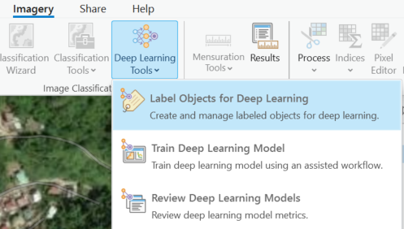
Although it is not the only way to do so in ArcGIS Pro, this tool is a convenient way to create polygon training samples and export them in the format required by the model. When prompted, select 'Label Using Existing imagery Layer' and then select your TIF as the input. Give the training samples a name and then use the polygon tool to manually label your samples. As these building footprint samples will form the basis for our damage classification and we are using less than ideal post-damage imagery, we will label all ~300 buildings.
<img src= "{static}/images/LabeledBuildings.png" alt ="Labeled building footprint samples for training a Deep Learning model" style= " width 150px; height: 150px;"
Tip : Be as accurate as possible when creating the labels. Also, if leaving some portion of the image unlabeled, use only the labeled extent for creating the samples Create a Geodatabase for your project and store the training samples in it. Add the training sample feature class to the map. Open the attribute tables, add a new field called Classvalue with datatype Short (integers) and populate all entries with a value of 1. Repeat this step, but create another field called Classname. Populate all its values with a text value of 1 (i.e., "1").
In our case, there is only one category of object or class building footprints. However, there could be multiple classes created, if interested in detecting distinct objects (cars, buses, lamp posts). The pt-DL model expects one class to identify all objects of the same class. The Class field will tell the model that all objects with a value of 1 are the in the same category i.e., building footprints.
Optionally, Clip your image to the Labeled Samples
If your labeled samples do not span the entire image or you have objects without labels, use the Clip Raster Tool with the TIF as input and extent set using your labeled training samples
Model Builder in ArcGIS Prop
If you decided to use the above provided custom toolbox for raster reformatting, it also has the option to use a Model Builder workflow that combines reformatting and creating a new Feature Dataset and a polygon feature class within it to speed up training sample creation. So, the ModelBuilder workflow will both create the reformatted raster and create a new feature class ready to be populated with your manually digitized buildings. Alternatively, you could create a similar tool by dragging and dropping geoprocessing tools into Model Builder beginning with the customer Extract Bands Export Raster provided above. The result would look like this:
<img src= "{static}/images/ArcGIS_MB_ReformatImage_CreateFc_for_BuildingSamples.png" alt ="Labeled building footprint samples for training a Deep Learning model" style= " width: 300px; height: 300px;"
In that case, to digitize training samples for pt-DL model, you would not use the Deep Learning tools in the imagery tab, instead run the provided Model Builder workflow for raster reformatting, new FeatureDataset (called BuildingsData) and polygon feature class (called BuildingTraining_Examples) creation. Then load and select your new polygon feature class. Select the Create Features tool in the Edit tab, begin by digitizing the first building and populating your first digitized feature with a class value and class name as 1. This way all following features will have the same values.
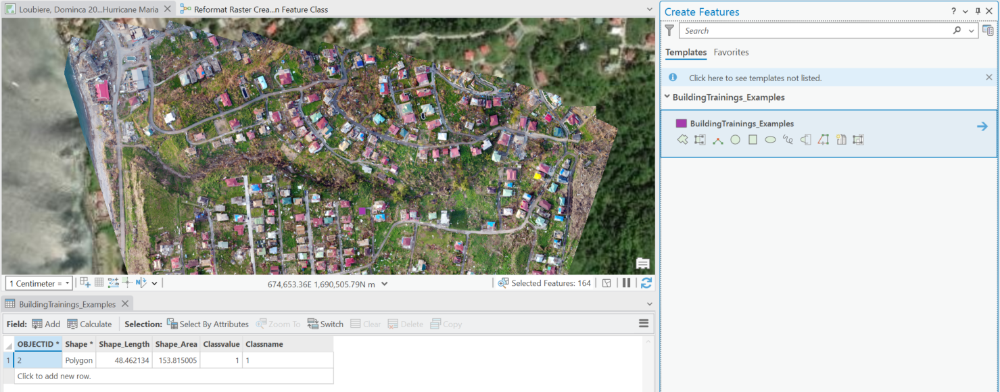
After creating the samples, you would use the same parameters to export them as shown above but using the geoprocessing tool Export Training Data for Deep Learning Tool.
Transfer Learning
Export the Training Data
We have created the training samples. Now we export the samples in the correct size and format for our particular DL model i.e, RCNN Masks format. Select the Export training Data tab and populate the fields accordingly. See below for discussion on determining best settings.
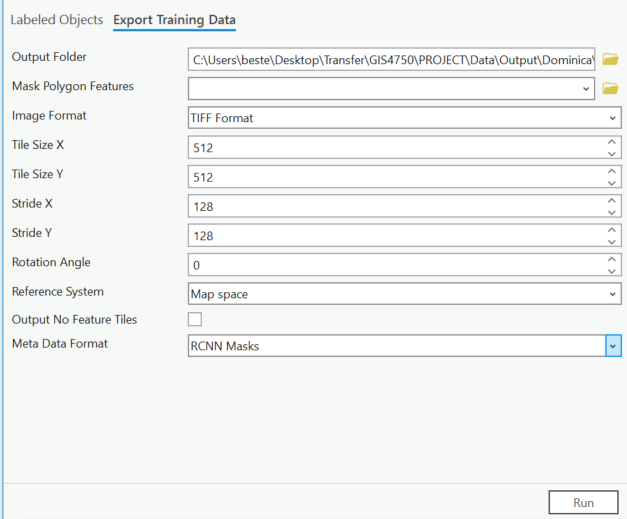
DL models in ArcGIS Pro train on images after breaking them into parts called image chips. These image chips are what the model will see and each one of those chips is has two associated files: an image file and corresponding label file. The label shows the model where the objects are in the image.
An important parameter to consider is the size of the chips entered in the Tile Size parameter. This tile should be large enough to fully enclose multiple objects that you want to detect i.e., multiple buildings. The tile size is measured in pixels. To figure out what your tile size is, use the measure tool and measure the length of objects in your input image. Note down the length in meters of the longest object measured.
Use the following formula to find the pixel size:
Building Length in Pixels = Building Length in Meters / Image resolution in Meters Per Pixel
EXAMPLE: longest building length = 36 , image resolution = 0.1 meters per pixel
36 m / 0.1 m /px = 360 pixels
Tile Size Simulator: Use to Approximate Tile Size
Recommended Tile Size: 512 x 512 pixels
DL models have standard image sizes they work best with, which are 128, 256, 512, 1024 pixels. However, there is evidence from the Esri developer community that non-standard tile sizes work Automate Building Footprint Extraction using Deep learning | ArcGIS API for Python.
This suggests that some empirical testing of different tile sizes might be necessary. Long story short. 256 tile size does very well for normal residential buildings but not for larger commercial buildings. So, for our case where we have a wide distribution of sizes the max of which is 380 pixels, we use 400 x 400 tile size. This enables us to fully enclose most buildings in our image chips. Since the majority of buildings are residential houses this should work well. If the opposite were true with most being large commercial buildings or warehouses we would need to use 512 or larger.
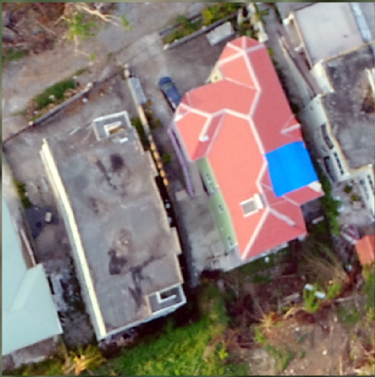 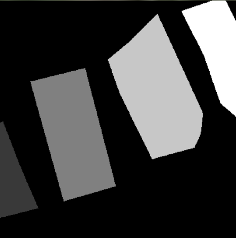
Next we choose a stride size which indicates the distance to move in pixels for each new image chip, thereby controlling overlap between images. Here we will follow a rule of thumb based on prior examples using stride size of 25% the tile size. That works out to 64 pixels. Since, we are using an RCNN Mask DL model so we select the metadata format RCNN Masks. The metadata stores each building object's segmentation mask (pixel accurate object outline) as polygons within the image and tells the model how to interpret object locations in each tile. The map space parameter is important for converting the pixel-based segmentation masks on the image to georeferenced vector data, enabling the model to map masked objects to their geographical locations Then we run the tool to export these training samples.
Custom Building Footprint Extraction Model Inference Result:
We now have created a DL model that is fine-tuned to our data. Here we call this model : Dominica_10cm_BuildingFootprint_model. Use the 'Detect Objects Using Deep Learning' tool in ArcGIS Pro. We will input our image, select the new fine-tuned DL model, and assign name for the output building footprint feature class. Here is a view of the tool and settings used.
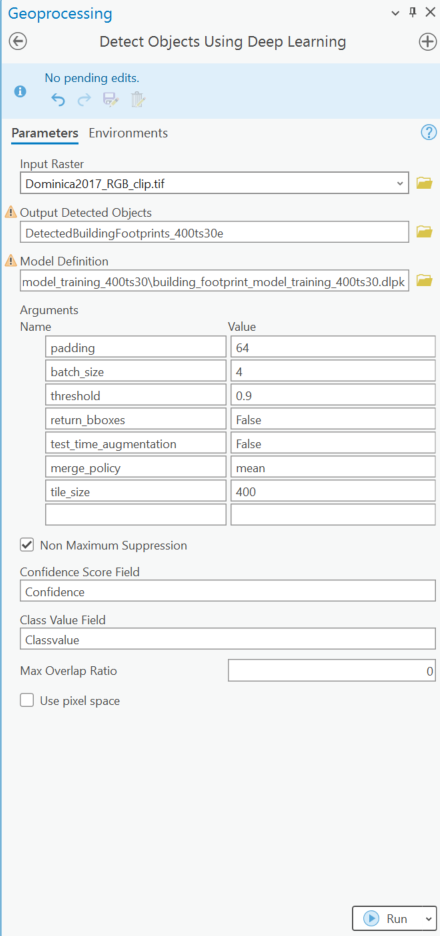
Now, let's see how well the custom model detects buildings.
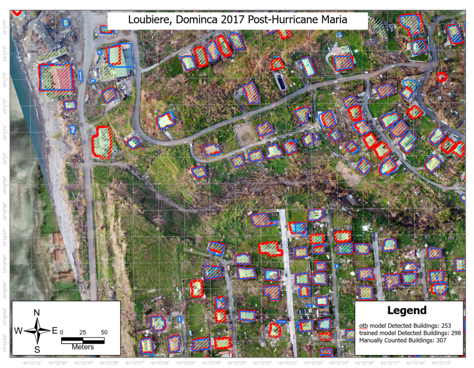
| Approach | counts | % Detected |
|---|---|---|
| pt-DL otb Model | 253 | 82% |
| fined-tuned pt-DL Model | 298 | 97% |
| Ground truth Buildings | 307 | 100% |
The results show that training Esri's USA Building footprint extraction model improved the results compared to using this pt-DL model out-of-the-box(otb). Here, 298 of the 307 buildings that were digitized manually were successfully detected after training the model. Key to this improvement was the model training on samples from this new geography and different resolution. This custom building footprint extraction model does very well with detecting residential-sized buildings. However, there still are issues with false positives, such as detection of a large swimming pool but this was limited to one instance in this imagery. It could be that in an image with many large swimming pools, the model may have more false positives. This model also did not detect all of the manually labeled buildings that were smaller than residential buildings (e.g., sheds). Altogether, training the USA building footprint model with our imagery improved its capability with minimal negative impact on false positives.
Training a Damage Classification Model
Now that we have a feature class of building footprints, we use it as input for a damage classification model. Again, we can leverage Esri's pre-trained DL models. The model we will use is called Damage Classification Deep Learning Model for Vexcel Imagery- Maui Fires. This DL model is used to classify building footprints as damaged or undamaged. It was developed for Maui, Hawaii geography, using 10 cm imagery sourced from Vexcel, an established commercial provider of high-res aerial imagery.
This model is available on Esri's ArcGIS Hub (Download here).
As before, this pt-DL model works well when your imagery is similar to that used to train the model. Let's have a look at what type of image the model is expecting. 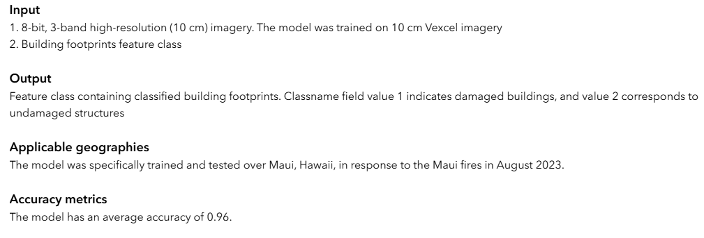
This pt-DL model expects input in the form of 8-bit imagery with 3 bands, 10 cm resolution, and a building footprints feature class. Our input image matches the requirements. So, our data aligns well to the model: no image formatting or resampling needed to use this model.
Essentially, we will repeat the above exercise of creating training samples. Here it is less tedious. The difference is that this time we start with a feature class and we need to label it based on whether those features have damaged roof tops. First, we should add a new field to our new building feature class called 'status' that will hold a numeric building damage attribute value. In this pt-DL model's classification scheme a 1 = damaged and 2 = undamaged objects.
As our classification will depend on roof damage, we need a some reference to define what is considered damaged. The damage assessment report done in Dominica post-Hurricane Maria highlighted buildings with 25% or greater roof damage. Those with less than 25% were marked as 'green' indicating minor damage. They did not clearly report the criteria for their categorization, however, there is some literature applying UAV-based DL to building damage classification that roughly aligns with FEMA's 'minor' damage category. So, here we define and mark buildings as 'damaged' that have 25% or greater of their roof visibly damaged, essentially labeling all those with moderate roof cover loss. This criteria should approximate buildings in FEMA's minor damage category and includes those with higher damage categories.
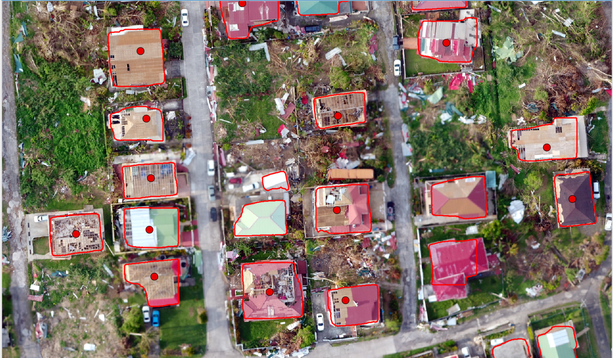
We only need to create points to label one class : marking either the damaged buildings or the undamaged buildings. Then we use those points to select buildings that intersect our building footprint feature class polygons, using that spatial relationship to change their damage attribute value. Finish the rest by switching the selection to label the remaining features. You can do this by selecting, filling-in and running these geoprocesssing tools in the this order: Select Layer By location(Intersect) --> Add Field (Statusvalue)-->Calculate Field (Statsvalue=1) --> Select Layer By Location (Switch current selection) --> Calculate Field (statusvalue=2). Now you have populated damage status for your building footprint fc.
After the status field is updated with values of 1 or 2, we create a buffer around all building objects. The intention is to give the Damage Classification model additional contextual information around the buildings. For this we create a 50 meter buffer with no dissolve around our building footprint layer. The output will be used to train the pt-DL Classification Model.
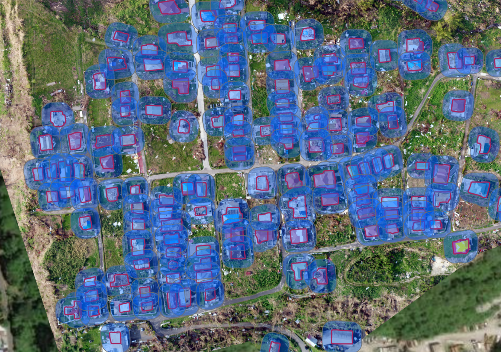
Export Damage Classification Samples
Export the buffered features using the Export Training Data for Deep Learning Model. Inputs are the properly formatted raster image and buffered building footprints. Be sure to enter the correct name for the class field and change the metadata format to Labeled Tiles.
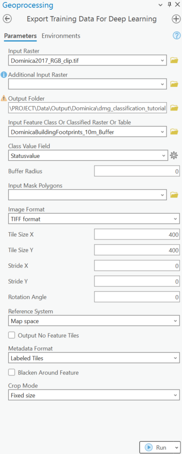
Train the Damage Classification model
Use the Train Deep Learning Model tool as previously. This time the input is the training data we created in the previous step. We name the output feature class and select the pt-DL for Damage Classification model 'Vexcel10cm_finetunewoolsey.dlpk'. The other settings are the same as previously for building footprint pt-DL. Be sure to check the environment tab to ensure you use the GPU --if not already done.
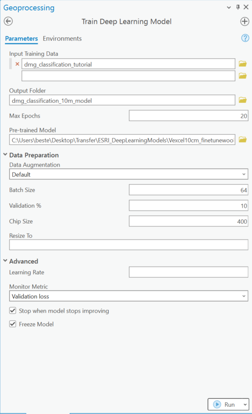
One of the outputs of the training is a confusion matrix. This evaluates the model performance in terms of specificity and sensitivity on the 10% on a subset of training samples used for validating the model during training. How you read the model's output confusion matrix is that the diagonal blue or shaded cells are the correct predictions, whereas the others are false negative or false positives. Here the top row shows the results for damaged samples and the bottom row for undamaged samples. We can see in this subset of the data, the trained classification model correctly classifies building footprints most of the time for damaged and undamaged samples. However, it does rarely misclassify damaged buildings as undamaged or damaged. So, we should anticipate some misclassifications in our results.
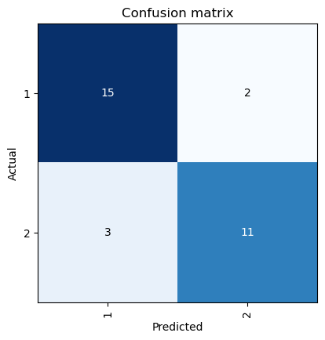
| Predicted: 1 (Damaged) | Predicted: 2 (Undamaged) | |
|---|---|---|
| Actual: 1 (Damaged) | 15 (True Positive, TP) | 2 (False Negative, FN) |
| Actual: 2 (Undamaged) | 3 (False Positive, FP) | 11 (True Negative, TN) |
Classify Building Damage
To categorize building footprints as damaged or undamaged, we use the Classify Objects Using Deep Learning Tool. Select the input raster and detected building footprints. Update the model definition with the path to our custom DL model. Keep all other default settings. If you have a GPU, go to the environment tab, change processor type to GPU and set GPU ID to 0.
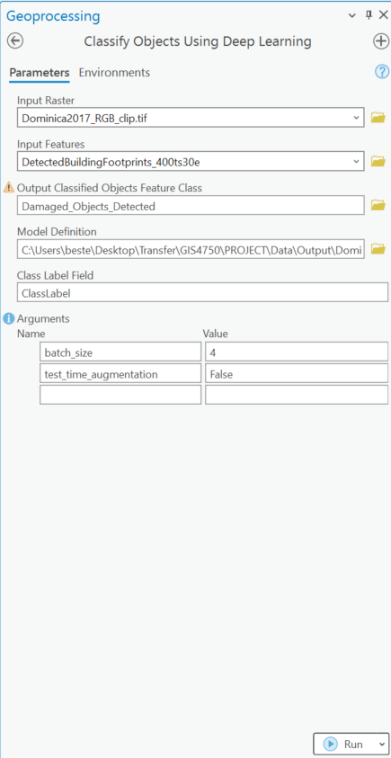
The results indicate that slightly more than half the buildings had damage that resulted in greater than 25% roof cover loss. On closer inspection, there were 3 building footprints that should have been labeled as damaged. This is expected given that our custom trained damage classification model has 90% accuracy and the confusion matrix shows some misclassification of damaged objects as undamaged.
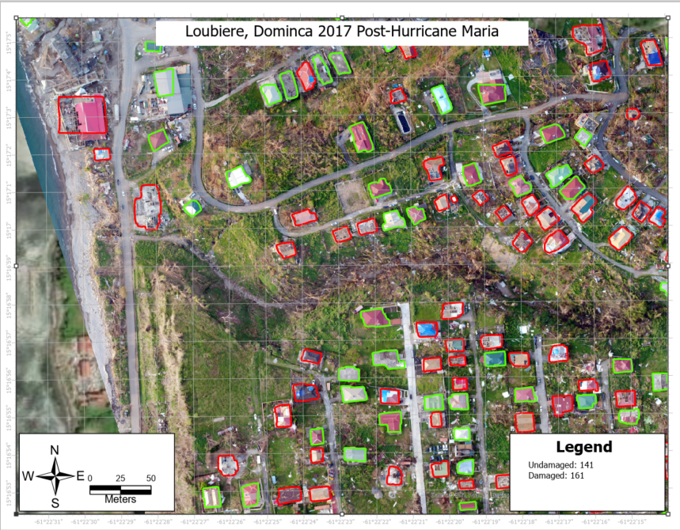
Conclusion
In a disaster event, quick and accurate damage assessments are important for initial resource planning, rescue and repair. The original damage assessment findings conducted in 2017 post-hurricane Maria in Dominica used a traditional ground-based damage assessment approach that took 3 months to complete. In contrast, UAV-sourced images can be acquired and converted into a shareable map product in the span of a few hours. Our study area, Loubiere, Dominica is approximately 47 hectares ( 0.18 sq miles). In this study, automated damage classification found slightly over 50% of the buildings in Loubiere,Dominica to be damaged. This aligns with a study from US-government agency National Geospatial Intelligence Agency (NGA) where this region was moderately affected compared to the east and north east regions of the island. In fact, of the 44 buildings marked as damaged in this dataset in our Loubiere study area, 37 of those were also classified as damaged by our newly developed DL model National Geospatial-Intelligence Agency.
Careful consideration of the time it takes to evaluate damage is critical for response and recovery in a disaster. The total area of the island of Dominica is 75,100 hectares (290 sq miles). Assuming that roughly 40% of the area (~30,040 hectares) encompasses the total area of the housing sector, and using a single UAV for data collection, it would take ~65 days to assess and report on building damage across the entire island. This is already an improvement of nearly 2 months over the traditional approach used by the damage assessors in 2017. Notably, for each UAV added to the data collection operations, the estimated time to complete the damage assessment would drop by ~30 days. With four UAVs working in parallel at different sites, the damage assessment of the entire housing sector is estimated to take less than 3 weeks. In addition, sharing daily damage assessment map products can feed into real-time planning, rescue and resource allocation.
Altogether, this set of tools for building damage assessment could be useful for post-disaster situation to quantify the proportion of damaged buildings. It can also be used to prioritize more densely impacted areas. If combined with other analyses and layers it could also be used to prioritize and delegate resources to these sites. In the real-world use of UAV-based data collection and automated building detection analyses would likely work alongside ground-based approaches to generate an initial damage assessment, facilitating planning and reporting.